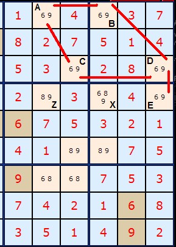
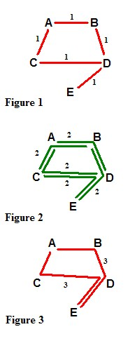
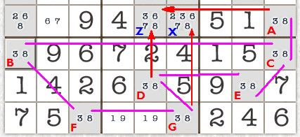
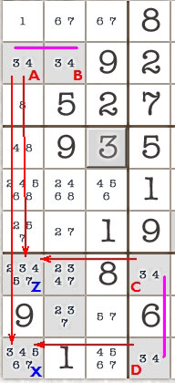

SudokuWiki.org
Strategies for Popular Number Puzzles
Remote Pairs
This strategy has been entirely subsumed into the various Chaining strategies, particularly Simple Colouring.

Pairs occur where two or more cells have the same two possible numbers. A locked pair is two such cells which lock each other in. For example, in the diagram on the right in the top row: 6 and 9 occur twice (labelled A and B) as a pair on the same row. This means the number 6 and the number 9 MUST both occur in these two cells. We can therefore eliminate other 6s and 9s from the same row. Same rule applies to boxes and columns. This forms the basis of Test 3 in my solver.
On the diagram on the right I have marked all locked pairs with a red line. These are AB, AC, BD, CD and DE.
The point of this test/strategy is that we want to eliminate the 9 from cell Z and leave the 8. Can we do this logically, or must we guess? What about cell X which also looks like a candidate for removing the 6 and 9?
To do this we must prove that A and E are themselves a locked pair. But how can we do this when they are not in the same row, column or box? We must also prove that B and E are NOT a locked pair, otherwise we'd have to remove the 6 and 9 from X as well. Visually we can see that if B is a 6 then D must be a nine so that E must be a 6. B and E are complementary pairs since they MUST have the same number, be it 6 or 9.
Likewise A and D.
Likewise A and D.

I have drawn in red the links between locked pairs and ignored all other links. Let us say these links have a distance of 1 between the nodes.
Now, in figure 2, we map all the pathways of distance 2. Valid pathways must be along the routes defined in Figure 1. What we are mapping here is all the complementary pairs, and I've drawn the links green. Topologically there cannot be ANY red links matching two locked pairs with
distance 2.
In figure 3, we are mapping all the possible pathways of distance 3. These paths represent connections between newly discovered locked pairs. There are only two possible paths in this example, and again they can only be between locked pairs at this distance.
If we had more nodes we could carry on like this and look for distance 4 paths representing new complementary pairs but distance 4 is not possible in this example.
However, we now know that we can show that AE is a locked pair if we can show that its minimum distance is an odd number (or distance mod 2 = 1 in arithmetical terms). They become a special locked pair I call a remote pair. Thus we may safely remove the 9 from Z. Because the distance between BE is an even number (2) we know we have a complementary pair and the information is useless for deciding the fate of X. Its important to remember numbers can be removed from any cell that both ends of the chain can see, so consider boxes as well as rows and columns.
Now the problem has been generalised we may proceed to code the rule into an algorithm. Test 9 on the solver page is the result.
Now the problem has been generalised we may proceed to code the rule into an algorithm. Test 9 on the solver page is the result.
Lets look at another example. This looks complicated because we have seven pairs
(marked A,B,C,D,E,F and G). Our targets are X and Z which can be got at by an attack from AD and AG.
We would like to remove the 3 and 8 from Z and X. However, it is only safe to remove
the numbers from Z. Why? Because AD is an odd number of locked pairs from each other (ACED or ACBFGD). AG, whether you go via ACBFG or ACEDG are even numbers apart.
(marked A,B,C,D,E,F and G). Our targets are X and Z which can be got at by an attack from AD and AG.

We would like to remove the 3 and 8 from Z and X. However, it is only safe to remove
the numbers from Z. Why? Because AD is an odd number of locked pairs from each other (ACED or ACBFGD). AG, whether you go via ACBFG or ACEDG are even numbers apart.

Credits
I'd like to credit the person who posted the board I've worked from but they didn't leave a name. The debate on this
problem is on this discussion forumdead link. Philip Frampton summarised the solution for Z most concisely.
New: March 2007. Mihail Iusut has written a particularly interesting formal paper on the relationship between Remote Pairs and XY-Chains. You can download this here.
Comments
Email addresses are never displayed, but they are required to confirm your comments. When you enter your name and email address, you'll be sent a link to confirm your comment. Line breaks and paragraphs are automatically converted - no need to use <p> or <br> tags.
... by: Gotd
It is very concise, easy to understand, with clear explanations. And, it pointed out some of the don'ts along with the dos, with explanations, instead of leaving the inquirer on his/her own.
... by: jaswant singh sriganganagar INDIA
... by: ad.joe
In soccer (football) there is a "Bank of Four", in German Viererkette"!
(Oh God, finding this translation at last (has?) needed 2 years!)
So let's state:
THE BANK OF FOUR BUILDS A REMOTE PAIR!
Any opinions to that? Is it idiomatic English?
Of course there is a Bank of Six also, etc.
To Rasmussen: For me coloring (you can use it instead, yes) is always unnecessary and clumsy and a Remote pair is really simple:
One look at the whole grid says:
When the certain number is not on the first cell of the Bank of Four, it's definitely on the last! And so is the other number!
... by: Charles Rasmussen
Am I missing something here. Wouldn't simple coloring accomplish the same result and be a lot easier.
Take Care,
Charles Rasmussen
... by: Joe T.
But: The way it works has to earn a name too (else newbys would say "Where's a pair?") which works as well:
In German we say VIERERKETTE (like the line of defenders in soccer is called). Does anybody have a better English word than "four man chain"?
(or 6 or 8 for Sechserkette/ Achterkette)
The full term of course would be:
"The VIERERKETTE creates a Remote Pair"
yours joe
... by: csvidyasagar
(1) A (6,9) and B (6,9) are locked pairs and can call the line joining them as Link I as A and B are in the same Row. B and D are also locked pair being in the same box and the line joing them can be called as Link 2. D and E are also locked pair being in the same Row and line joining them can be called Link 3. So you three links which are open ended - i.e not joined and forming a loop . So A is same as E and B is same as D . When you have odd links i.e .1, 3, 5 the cell Z ( 8,9)lying in the intersection of these ends i.e. A (6,9) and E (6,9) can not have one of the numbers in it and 9 can be removed from cell Z which now has only 8.
2) In the second example of seven locked pairs, you can follow the same explanation as given in 1) and this will give the same result. A(3,8) and C (3,8)are Locked pair being in the same column and form Link 1; C and E are locked pair being in the same box and form Link 2; E and D are locked pair being in the same Row forming Link 3. A & E are Complementary pair and so is C & D. Therefore A and E are one and the same so is C & D. Since there are three links (odd), the cell Z (3,6,7,8) falling in the intersection of end of three links i.e. A & D can not have either of the numbers (3,8). So remove 3,8 from Z (3,6,7,8) thereby leaving only 6,7 in it.
3). The same logic applies to cell X (2,3,6,7,8). You can not remove any numbers from X as the links are not odd.
Route. A to C being in the same Column (Link 1), C to B being in the same Row (Link 2), B to F being in the same box (Link 3) and F to G(Link 4). The ends of link are A and G but they are four links (not odd)connecting one end A to another end G, hence you can not remove any of the numbers from cell falling in the intersection of two ends A & G.
This is simple explanation rather than the long winded one you gave will make understanding easier.
with regards,
Vidyasagar
A very impressive and useful work. Bravo!
Just like to add that its very difficult to create new and very easy to criticise old.
csvidyasagar has explained certainly better than original work but calling the original discoverer " made it difficult " is bad comment.
... by: K.R.VIJAYASARATHY